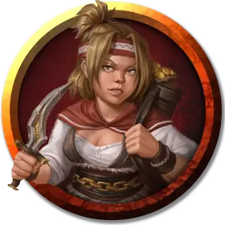

Торджа Камнедробилка (5-8 уровня)
Torgja Stonecrusher (Levels 5-8)
Средний Гуманоид (Дварф), хаотично-нейтральный, именной НИП

Класс Доспеха 11 (кожаный доспех)
Хиты 32 (5к8 + 10)
Скорость 30 футов
| мод | спас | ||
|---|---|---|---|
| СИЛ | 15 | +2 | +2 |
| ЛОВ | 11 | +0 | +0 |
| ТЕЛ | 14 | +2 | +2 |
| мод | спас | ||
|---|---|---|---|
| ИНТ | 10 | +0 | +0 |
| МДР | 10 | +0 | +0 |
| ХАР | 11 | +0 | +0 |
Навыки Запугивание +2
Чувства пассивное Восприятие 10
Языки 1 любой язык (обычно Общий)
Опасность 1/2 (100 опыта)
Бонус мастерства +2
Особенности
Тактика стаи. Торджа совершает с преимуществом броски атаки по существу, если в пределах 5 футов от этого существа находится как минимум один дееспособный союзник Торджи.
Действия
Мультиатака. Торджа совершает две рукопашные атаки.
Булава. . Рукопашная атака оружием: +4 к попаданию, досягаемость 5 футов, одно существо. Попадание: Дробящий урон 5 (1к6 + 2).
Тяжелый арбалет. Дальнобойная атака оружием: +2 к попаданию, дистанция 100/400 футов, одна цель. Попадание: Колющий урон 5 (1к10).
Описание
Торджа Камнедробилка обладает веселым, беспечным характером, который противоречит ее безжалостности.